Manuel utilisateur illustré
Un guide simple pour préparer les entretiens, suivre les échéances, exprimer les besoins de développement et construire le plan de compétences.
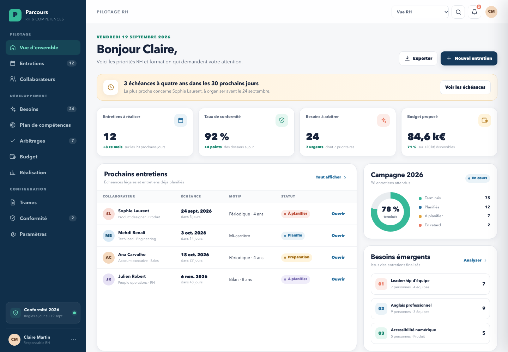
Objectif du manuel
La plateforme relie les besoins exprimés par les collaborateurs, les entretiens de parcours professionnel et le plan de développement des compétences piloté par les RH.
Piloter les échéances, préparer et conduire les entretiens, consulter les historiques, qualifier les besoins, arbitrer et suivre le budget.
Préparer son entretien, exprimer des souhaits, envoyer une demande spontanée, suivre les réponses et retrouver ses documents.
Les envois, sauvegardes, exports, signatures et changements de statut sont simulés. Aucune donnée réelle n’est enregistrée ou transmise.
Utilisez le sélecteur en haut à droite pour passer de Vue RH à Vue collaborateur. Le menu de gauche s’adapte automatiquement.
Repères
Commencez par les pages liées à votre rôle. Les encadrés verts indiquent les points essentiels, les encadrés jaunes les précautions et les encadrés rouges les risques à éviter.
01 — Tableau de bord
02 — Échéances individuelles
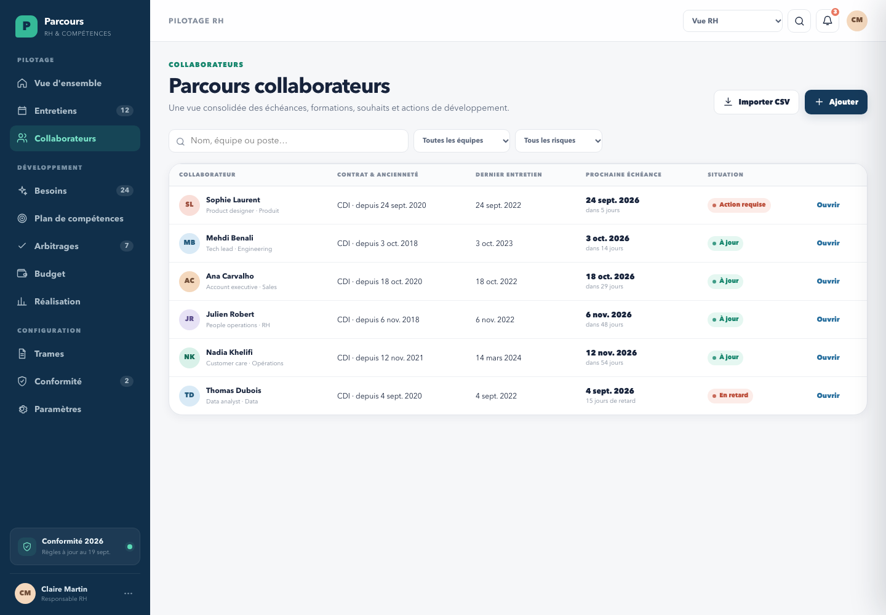
03 — Fiche et historique
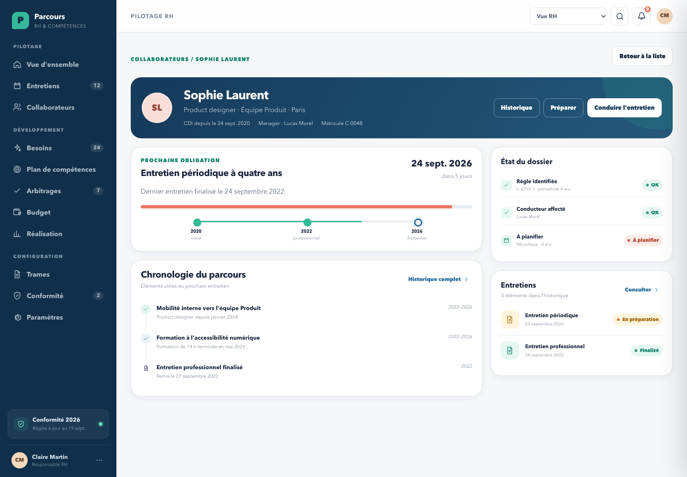
La fiche présente la prochaine obligation, le profil et les accès au dossier.
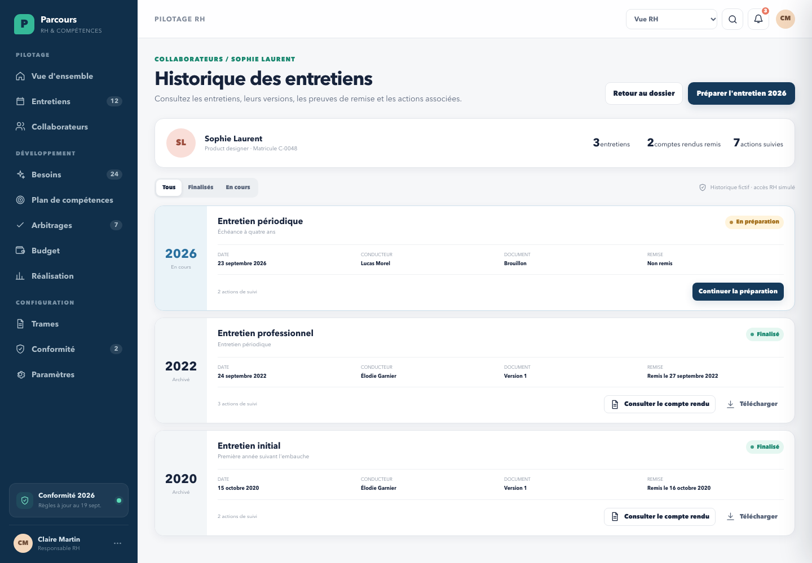
L’historique conserve les entretiens, versions, remises et actions associées.
Un compte rendu finalisé reste consultable et ne peut pas être remplacé silencieusement.
Le nouvel entretien reprend les souhaits et actions précédents comme référence, puis enregistre les actualisations dans une nouvelle version.
04 — Préparation guidée
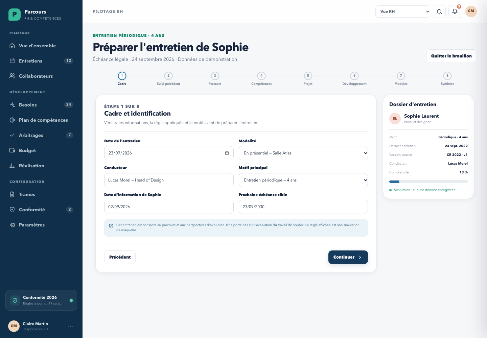
05 — Consolidation
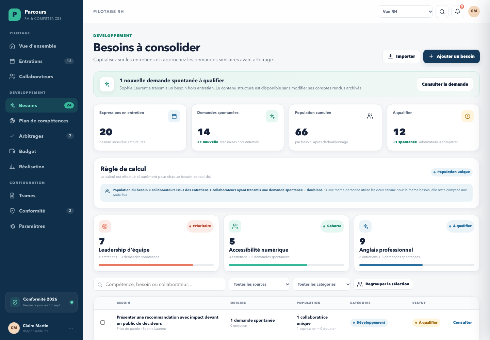
06 — Demande spontanée reçue
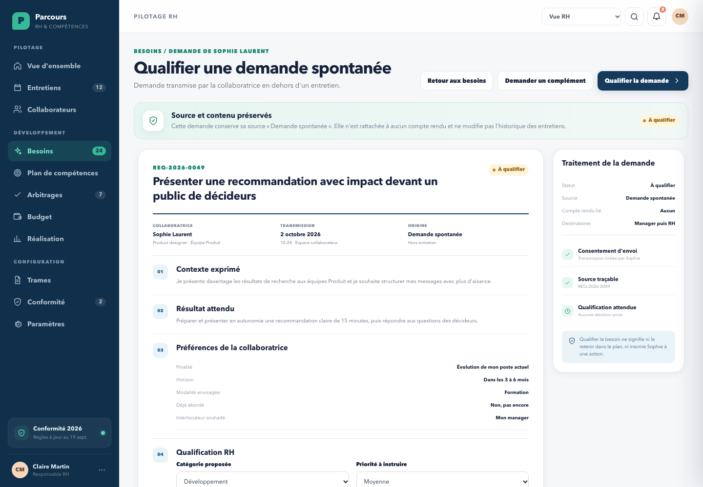
07 — Plan de compétences
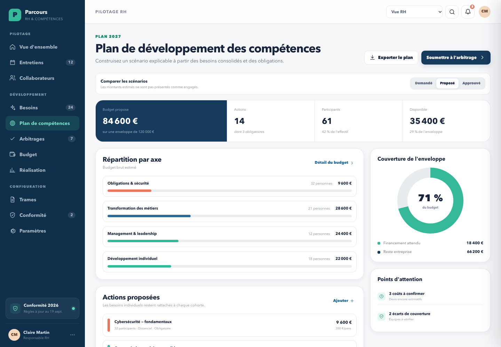
08 — Arbitrage et budget
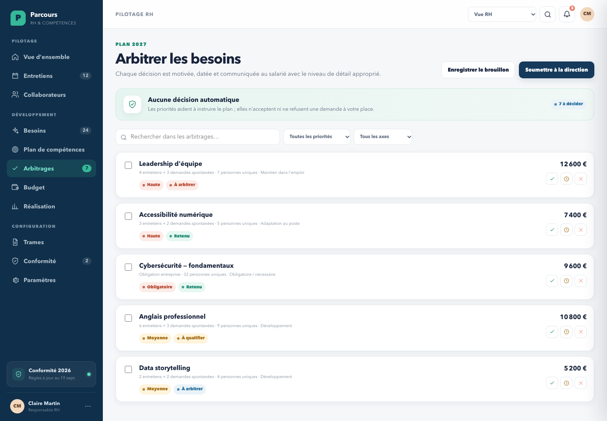
Chaque décision est préparée avec son contexte, son coût et sa population.
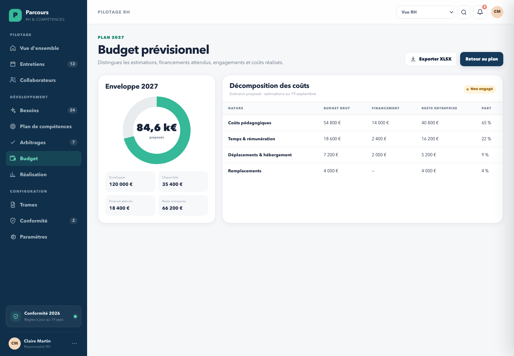
Le budget distingue coûts estimés, financements et reste à charge.
RetenuReportéNon retenu
La décision doit être accompagnée d’une explication factuelle et d’une prochaine étape compréhensible.
09 — Mon espace
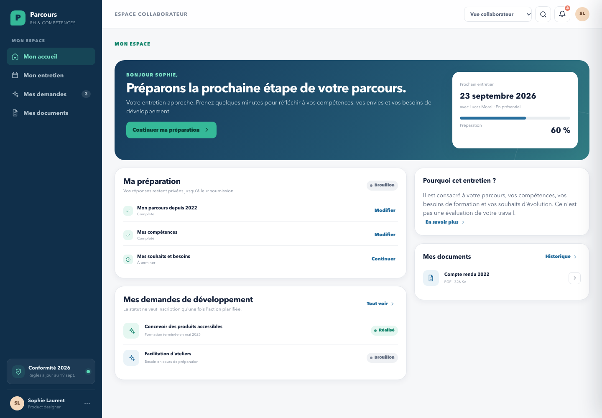
10 — Ma préparation
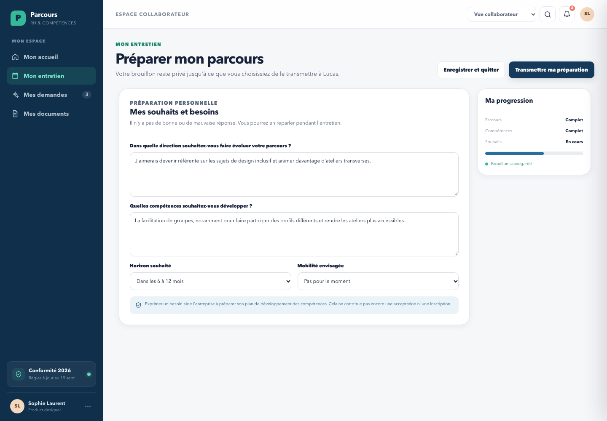
11 — Mes demandes
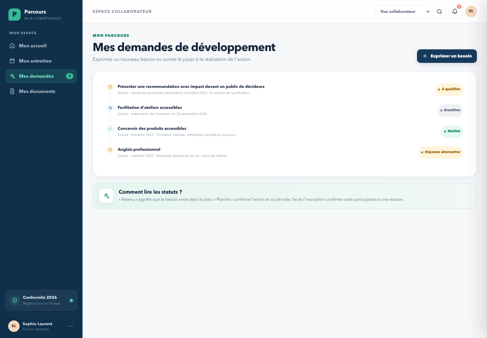
12 — Besoin spontané
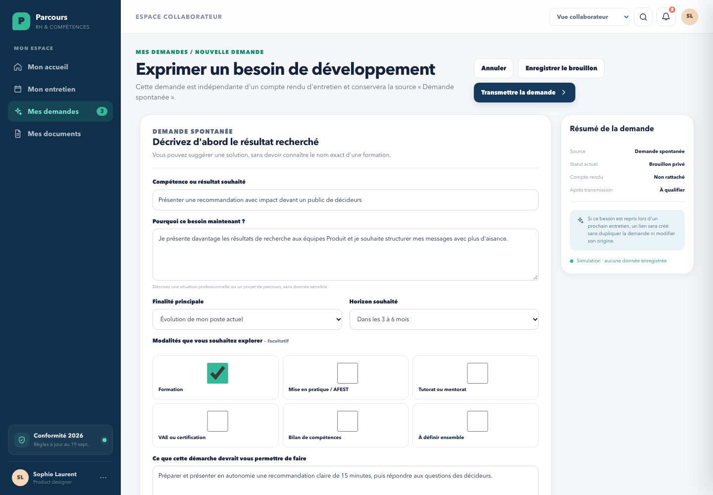
13 — Mes documents
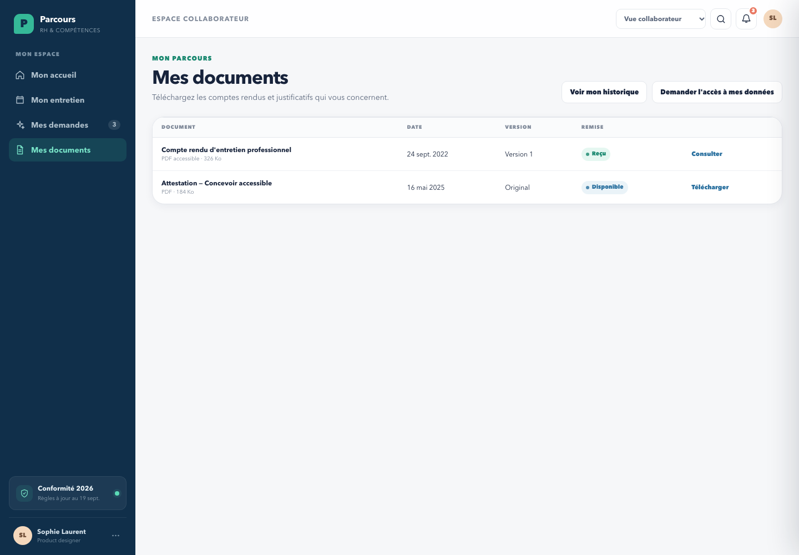
14 — Comprendre les statuts
| Statut | Signification | Ce qu’il faut faire |
|---|---|---|
| Brouillon privé | Le collaborateur n’a pas encore transmis la demande. | Compléter ou transmettre. |
| À qualifier | La demande est reçue mais doit être précisée ou classée. | Analyser le besoin, demander un complément si nécessaire. |
| À arbitrer | Le besoin est suffisamment qualifié pour être décidé. | Comparer priorité, population, réponse et budget. |
| Retenu | Le besoin est intégré au plan approuvé ou proposé. | Construire et planifier l’action. |
| Reporté | Le besoin reste connu mais est renvoyé à une période ultérieure. | Donner un motif et une date de réexamen. |
| Non retenu | Le besoin n’est pas intégré au plan dans sa forme actuelle. | Fournir une réponse factuelle ou une alternative. |
| Planifié | Une action et une période sont prévues. | Confirmer ensuite l’inscription ou la session. |
| Réalisé | L’action est terminée et peut alimenter le parcours. | Ajouter le résultat ou le justificatif utile. |
15 — Mots utiles
Action de formation en situation de travail. Apprentissage organisé sur une activité réelle, avec accompagnement et temps de recul.
Compte personnel de formation. Droits mobilisables par la personne selon les règles applicables.
Conseil en évolution professionnelle. Accompagnement externe et gratuit du projet professionnel.
Validation des acquis de l’expérience. Démarche permettant de faire reconnaître des compétences acquises.
Groupe de besoins similaires rassemblés pour construire une réponse commune sans perdre les sources individuelles.
Nombre de collaborateurs distincts concernés par un besoin, après retrait des doubles expressions.
Version figée de l’entretien. Toute correction doit produire une nouvelle version traçable.
Date à laquelle une obligation doit être satisfaite, calculée à partir des règles et de l’historique.
Besoin transmis par un collaborateur en dehors d’un entretien, conservant une source distincte.
16 — Aide-mémoire
Collaborateurs → repérer « En retard » → ouvrir la fiche → vérifier l’échéance → planifier l’entretien.
Mon accueil → Continuer ma préparation → renseigner souhaits et besoins → transmettre volontairement.
Mes demandes → Exprimer un besoin → compléter le résultat attendu → enregistrer ou transmettre.
Besoins → consulter la demande → vérifier la source → demander un complément ou préparer la qualification.
Comparer les sources → retirer les doublons par collaborateur → vérifier la population unique → créer une cohorte.
Plan de compétences → créer les actions → estimer les coûts → proposer → arbitrer → publier la version approuvée.
Conserver la source, expliquer le statut et afficher la prochaine étape. Une expression de besoin n’est jamais présentée comme une promesse.
Parcours RH & Compétences
Utilisez la maquette pour valider les parcours, les mots employés et les règles métier avant la construction du produit réel.
prototype/index.html
documentation/manuel-utilisateur.pdf
Document produit à partir de données fictives — Version 1.0 — 2 octobre 2026